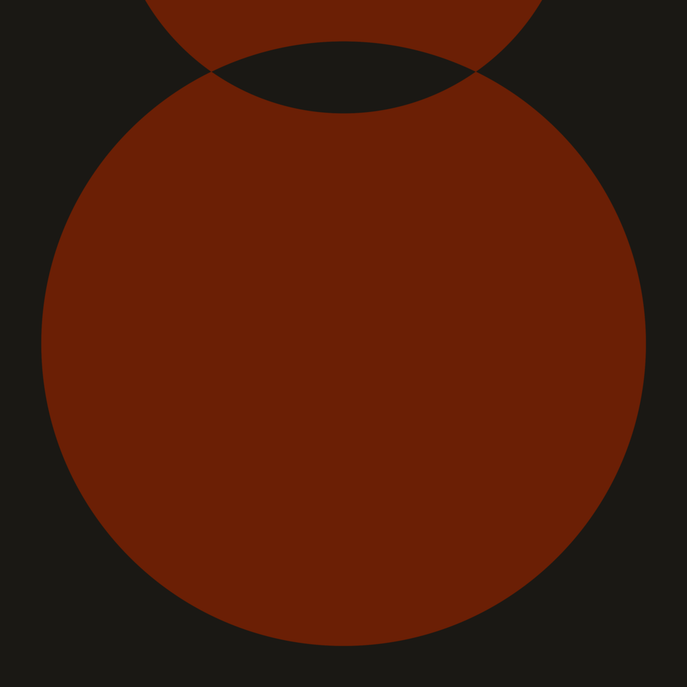
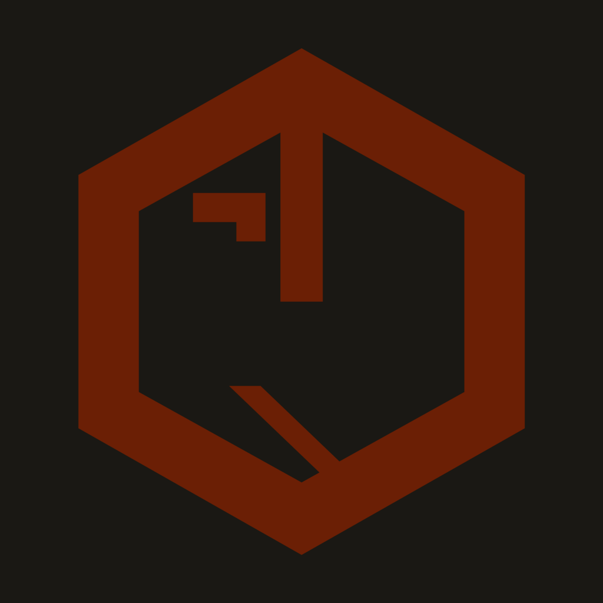
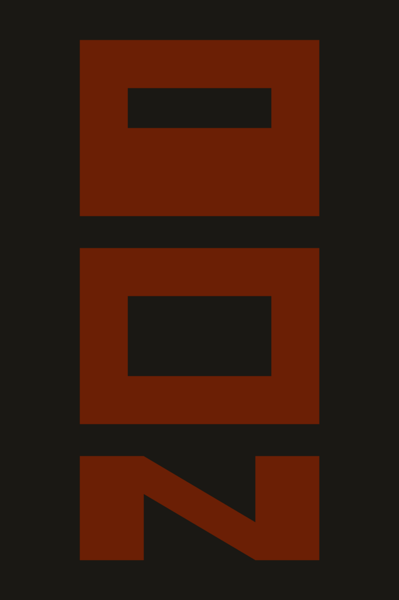
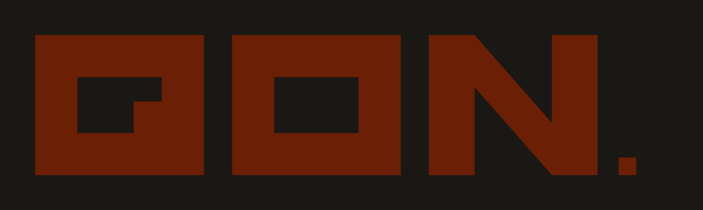
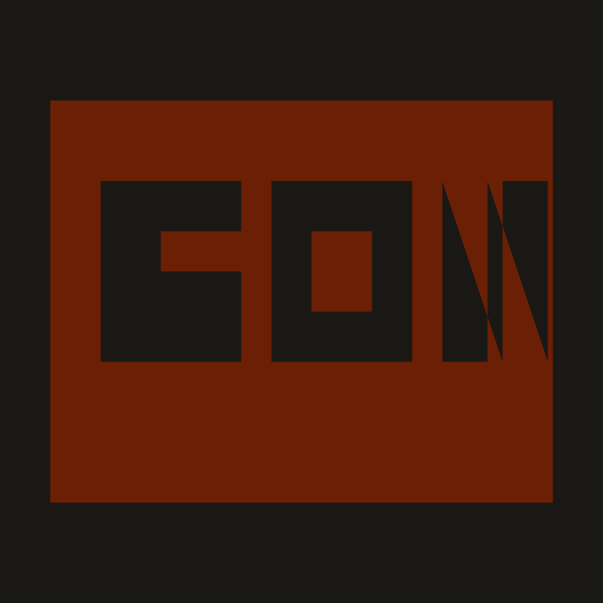

01
Circular refined
El emblema actual reconstruido con geometría matemática perfecta. Sin las imperfecciones del trazado original.
Más cercano al actual
Mismo ADN brand (geometría rotunda, paleta Ink + burnt orange) en aproximaciones distintas. Cada uno es un logo SEPARADO, no una variante.




